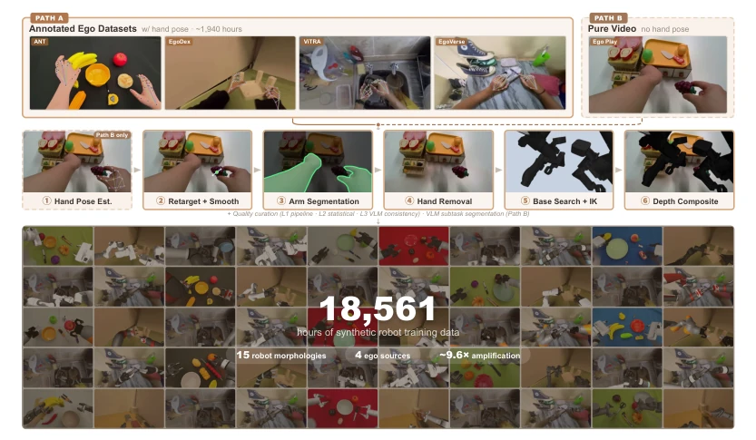
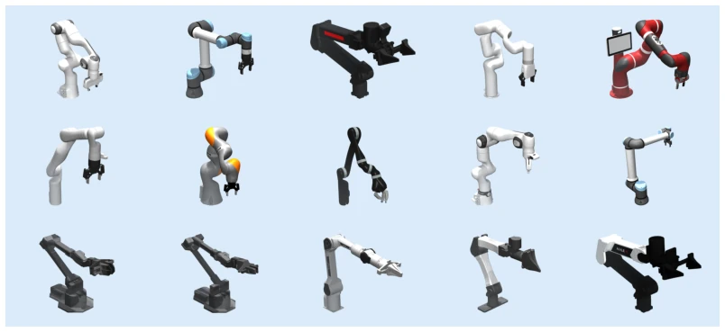
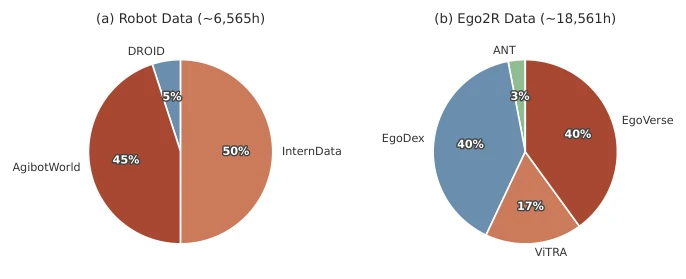
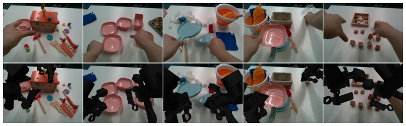
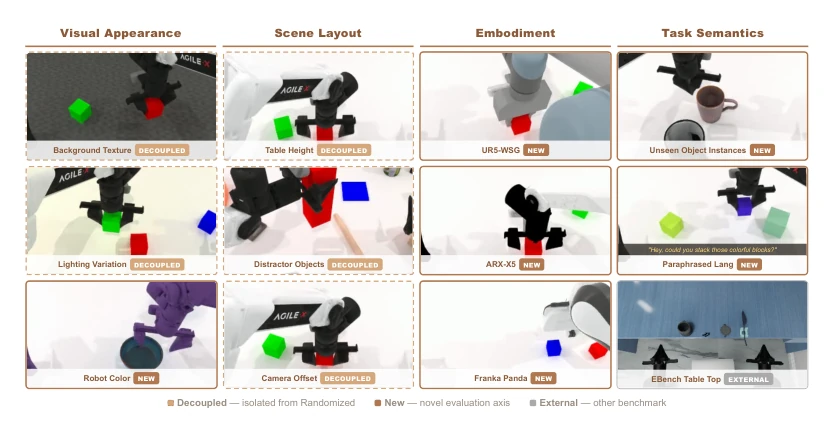
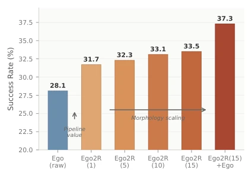
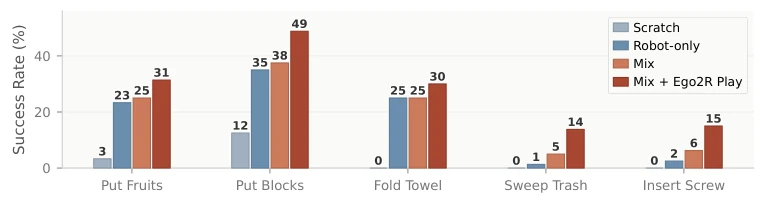
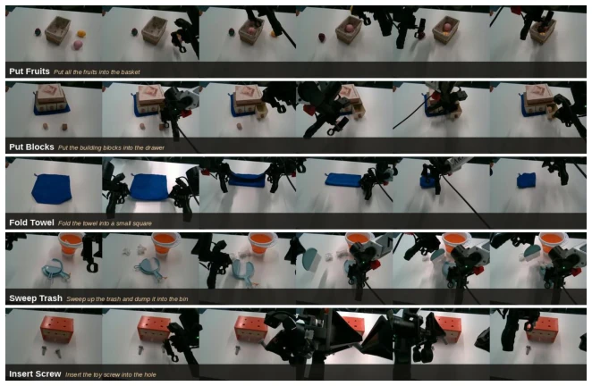
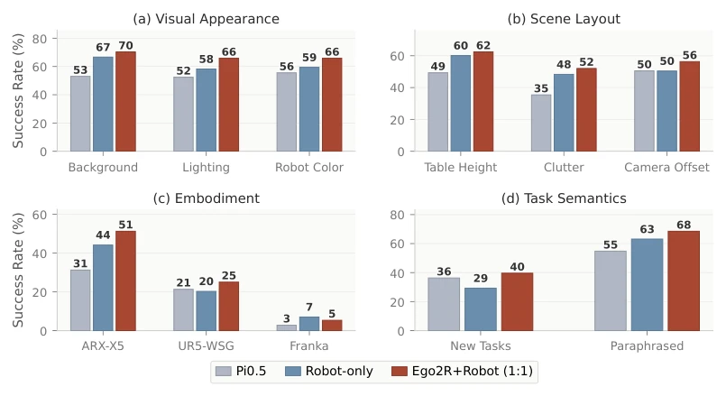

这篇论文试图把人类第一视角视频变成机器人训练数据，算是给 VLA 模型找了个“免费劳动力”。1.8 万小时的数据量确实吓人，号称史上最大 ego-to-robot 数据集。但核心逻辑有点“缝合”：把人手映射成平行夹爪，再 P 掉手臂换成机器人。虽然实验证明混合训练能提升泛化性，尤其是视觉和语义方面，但局限性也很明显：只支持平行夹爪，忽略了灵巧手细节；视频合成依赖 inpainting，复杂遮挡下可能翻车。此外，基座搜索依赖 IK 可行性，可能丢失部分动作。总的来说，这是用“视觉欺骗”换取数据规模的一次大胆尝试，适合做预训练，但离真正灵巧操作还有距离，属于“量变引起质变”的激进探索。
This paper attempts to convert human first-person videos into robot training data, essentially finding a "free labor force" for VLA models. The data volume of 18,000 hours is indeed shocking, claimed to be the largest ego-to-robot dataset in history. But the core logic is somewhat "patched together": mapping human hands to parallel grippers, then removing arms and replacing with robots. Although experiments prove mixed training improves generalization, especially in visual and semantic aspects, limitations are obvious: only supports parallel grippers, ignoring dexterous hand details; video synthesis relies on inpainting, may fail under complex occlusions. Additionally, base search relies on IK feasibility, potentially losing some actions. Overall, this is a bold attempt to exchange "visual deception" for data scale, suitable for pre-training, but still far from true dexterous manipulation, belonging to a radical exploration of "quantitative change leading to qualitative change".
The core bottleneck of embodied intelligence lies in the scarcity and high cost of high-quality robot demonstration data [6, 7, 8]. Although efforts like Open X-Embodiment have expanded scale, hardware limitations and teleoperation costs remain high. Existing methods utilizing human videos (such as Phantom [14], Egomimic [15]) mostly focus on small-scale task verification, lacking systematic evaluation of generalization benefits for large-scale VLA pre-training. This paper aims to solve the core question of "whether human data can be effectively converted into robot data", verifying whether large-scale ego2robot synthetic data can make up for the lack of distribution diversity in robot data, especially regarding the improvement of out-of-distribution (OOD) generalization capabilities.
The core is the Ego2Robot pipeline, divided into three stages. 1. Action alignment: Map human hand keypoints to gripper trajectories via hand-to-gripper retargeting, define virtual fingertips and TCP, and use Savitzky-Golay filtering to smooth velocity distribution, resolving speed differences between human hands and robots. 2. Visual alignment: Segment arms using SAM 3 [51], remove human hands and repair backgrounds using ProPainter [52]. The key innovation is robot base pose search, optimizing base position through grid search and IK feasibility scoring to ensure actions are within kinematic ranges, finally depth perception synthesis. 3. Quality filtering: L1 checks IK failure within process, L2 statistical anomalies, L3 uses VLM (Qwen3.5 [50]) to check semantic consistency. Supports two input paths (labeled or pure video), can generate 15 types of robot morphology data in parallel, covering various morphologies.

Figure 1: Ego2Robot pipeline. Converting egocentric video into 18,561h robot training data across 15 morphologies through action alignment, visual alignment, and quality curation.

Figure 6: 15 supported robot morphologies. 3D models of all 15 robots.

Figure 7: Pretraining data composition. Slices show per-source sampling weights (training mix); panel titles give the total data volume. (a) Robot (∼6,565 h). (b) Ego2R (∼18,561 h).

Figure 8: Ego play →Ego2R synthesis on real-world scenes. Top: original egocentric human manipulation. Bottom: Ego2R pipeline output with ACone robot overlay.
Extended the decoupled evaluation framework based on RoboTwin2.0 (visual, scene, embodiment, semantic). Compared Robot-only with Ego2R+Robot mixed training (1:3, 3:1, 1:1). Results show 1:1 mix improved by 2.6% on RoboTwin Randomized, and 12.1% on EBench. Ablation indicates increasing robot morphology count (1 to 15) can continuously improve performance. Real robot testing (ARX ACone) on 5 long-horizon tasks, mixed training with few demonstrations outperforms pure robot data. Proves synthetic data can effectively supplement distribution diversity, especially under visual and semantic perturbations.

Figure 2: Evaluation framework. Four generalization dimensions with 12 evaluation settings. Dashed borders: settings decoupled from bundled randomization for independent testing. Solid borders: newly introduced evaluation axes. Gray border: external benchmark (EBench).

Figure 3: Pipeline value and embodiment scaling. Success rate on RoboTwin Randomized.

Figure 4: Real robot results. Success rates (%) on five tasks on the ARX ACone platform.

Figure 5: Real robot rollouts. Key frames from five evaluation tasks on the ARX ACone platform.

Figure 9: Comparison with Pi0.5 across RoboTwin settings.